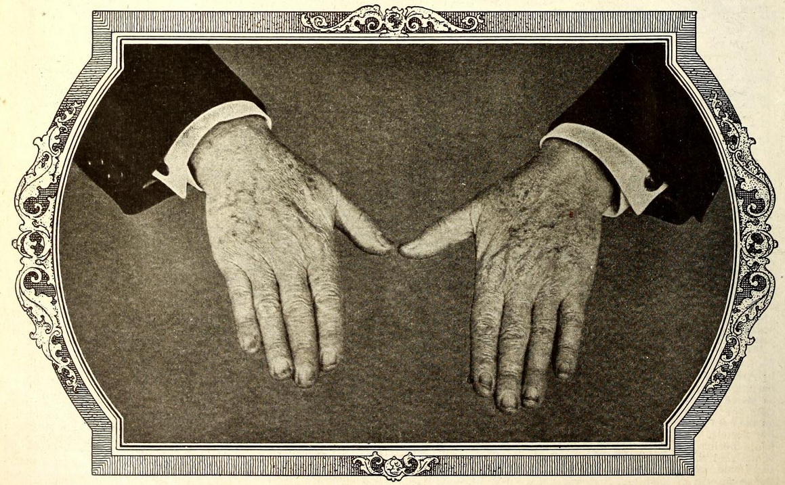

The Perversity of Things
*Electrical Experimenter*, vol. 4 no. 4 , August 1916
DRAFT: Please do not share without permission of the author. Typeset versions in web | pdf | doc
THIS is by no means a new subject. Much has been said and written about the recalcitrant behavior of things in general toward us humans. Much remains to be said and written. Very much remains to be explained.
Of all individuals, the experimenter, perhaps, suffers most under the tyranny of the inanimate things and it happens not infrequently that he succumbs to their wiles and to their devilish snares.
Let us take an everyday case, familiar to every experimenter, worthy of their name. You have planned the construction of a certain instrument and you know just how to go about making it.
You have shaped the wooden base which is now ready to be drilled for its several holes. You have laid out the holes on the base and while doing so you have broken the point of your pencil twice. This has caused you some annoyance. After you have drilled every hole but one, you break the only two drills you have in the attempt to drill through a knot! Of course that hole just had to come on a knot! But you must have that hole. What is there to do? In the absence of the drill, a bright idea strikes you. The hole will be drilled without the drill! Therefore you take a nail, heat it red hot, and after much effort the hole is finally well under way. As the process is slow and weary, you decide not to burn the hole all the way through. So when the nail has penetrated three-quarters through the board you take recourse to the hammer, intending to drive the nail through the remaining portion of the wood. In this you are successful indeed—but, alas, with the result that the entire base is split in two! Another base is made now and everything seems to run smoothly, including the holes. After the base is finished you give it several good coats of shellac and it is then placed in the sun to dry, while you go to lunch. On your return you look at the base. Somehow it does not look the same. Sure enough—it has begun to warp badly already and you know that by tomorrow morning it will be bent into almost a semi-circle.
By this time you are angry clear through and you slam the base into the furnace, accompanying the action by much profanity. You mutter of “Hoodoo” and “Hard luck,” but if you are a true dyed-in-the-wool experimenter, you will be working on a third base before long. You do not fare much better with the balance of the work. Everything you touch seems to be “hoodooed.” Screws don’t fit, nuts will not go on their respective screws, the brass casting cannot be fitted for hours at a time, you can’t seem to drill or tap a hole without snapping off either the drill or the tap. To add insult to injury, just when the instrument is about to be completed, the screwdriver slips and makes a nasty gash in your left hand. This, of course, puts you out of action for the time being and you are, indeed, worthy of our admiration if you do not let loose a “blue streak” of English not found in Webster’s unabridged dictionary!
Now let us analyze this seeming perversity of things. Why do inanimate things act thus? Why does the eternal wisdom of nature, seemingly always interpose obstacles in his way whenever man desires to invent or construct a certain new thing?
The answer is that it does not. It is not the things that are perverse, it is ourselves who make them seem perverse.
In our example just mentioned, it was not the fault of the base which kept you from completing it. It was purely your lack of forethought, and mostly your impatience that caused all your trouble. For if you had used a carpenter’s pencil, instead of a frail drafting pencil, the point would assuredly not have broken twice. Simply lack of attention here. Also, had you turned the base around the other way, your drill would, in all probability, not have struck the knot hole. Again lack of attention. Once you knew that you had not the proper tools to drill holes through a hard knot, you had no right to attempt the work in spite of it. Forethought would have told you the inevitable result. This holds true for the second base. Common sense should have told you not to use the “green” wood for an instrument base; painting shellac on one side of it, taught you a graphic lesson.
And so it does all the way through. So it has gone for aeons and centuries. Man always stands ready to blame inanimate things for his blunders; everything is blamed on the perversity of things, when it should be blamed on the perversity of man.
It took the human race several million years to construct an automobile. The material, the things, existed for millions of years long before the human race was heard of; it was not for lack of things the first automobile was not built sooner. It was for the lack of man’s intelligence. To-day, the same man with a little acquired intelligence and a little acquired experience turns out several thousand automobiles each working day—no perversity of things here.
Summing it up the failure of most experimenters and workers who do not accomplish anything can usually be directly traced to their lack of knowledge of inanimate things. At best few people thoroughly understand materials. Few people can tell offhand what certain materials will do and what they cannot do, under conditions to which they have never been subjected. Men like Faraday and Edison have this exceptional instinct developed in a high degree. They know intuitively what a certain metal will do in a vacuum when subjected to a high potential electrical discharge. With most other workers it is a case of long experience and intimate contact with things that gives them the true insight into their characteristics.1 Furthermore, the man who accomplishes things is the man who doesn’t lose his temper and who doesn’t get impatient. The successful experimenter’s motto should be: Patience.
If people would only stop to think how infinitely little we know about everything about us, and how thoughtless we are in our relations to all inanimate things, we would not be so apt to complain about the fabled Perversity of Things.

-
Commenting on his hands-on training in early nineteenth century Edinburgh, the engineer James Nasmyth writes, “The truth is, the eyes and fingers—the bare fingers—are the two principal inlets to sound practical instruction. They are the chief source of trustworthy knowledge in all the materials and operations that the engineer has to deal with. No book knowledge can avail for that purpose. The nature and properties of materials must come in through the finger-ends; hence I have no faith in younger engineers who are addicted to wearing gloves. Gloves, especially kid-gloves, are non-conductors of technical knowledge.” Samuel Smiles, ed., James Nasmyth, Engineer: An Autobiography (New York: Harper, 1883), 99-100. Quoted in The Mindful Hand: Inquiry and Invention From the Late Renaissance to Early Industrialization, (Amsterdam: Koninklijke Nederlandse Akademie van Wetenschappen, 2007), 309. ↩
Grant Wythoff, editor
grant.wythoff@gmail.com

This work is licensed under a Creative Commons Attribution-NonCommercial-NoDerivatives 4.0 International License.